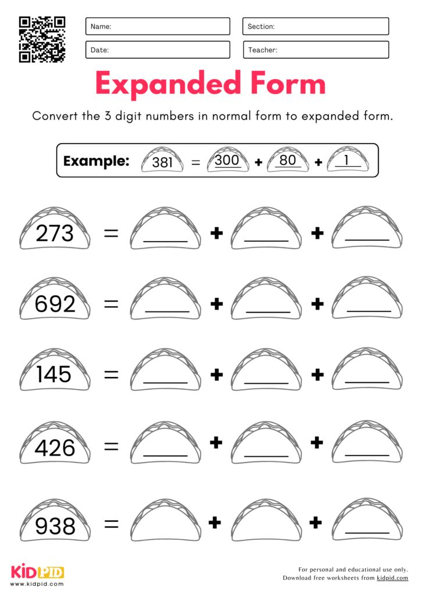

3rd-5th gradespecific worksheet
Convert to Expanded Form: Grade 3 Place Value Worksheets
- Source
- Kidpid Pinterest pin
- Creator
- kidpid.com
- Found
- Pinterest first visible results
- Why
- Specific grade-3 place-value worksheet preview with the target skill visible.